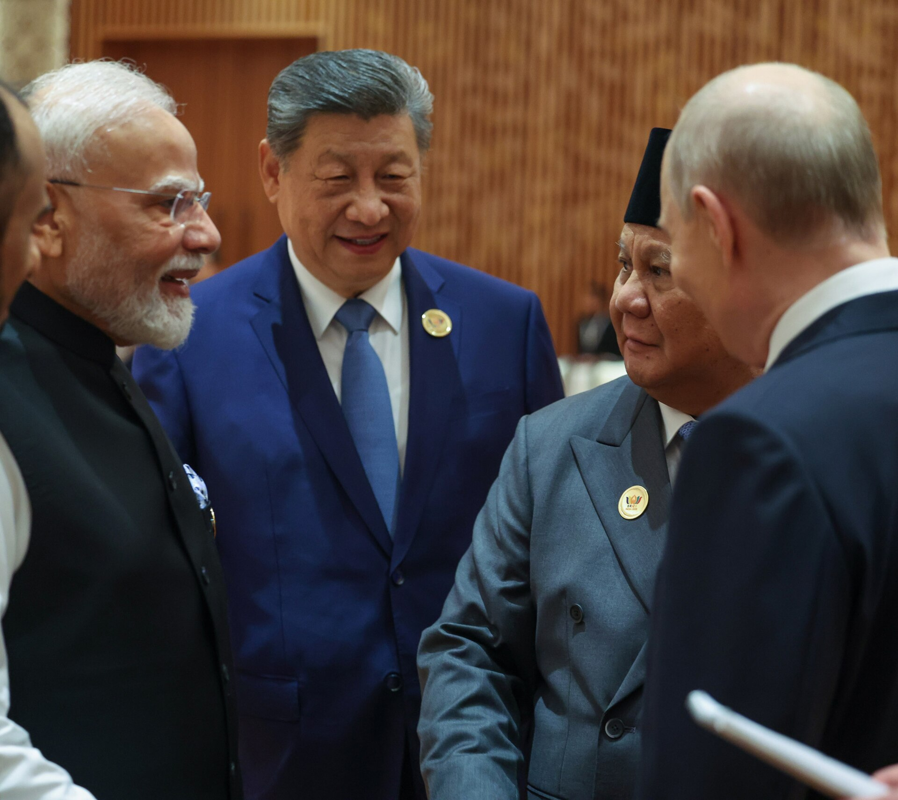

BRIKS Yangi Dehli deklaratsiyasini qabul qildi: 140 band, BMT islohoti va sun’iy intellekt boshqaruvi
18-BRIKS sammiti 12–13-sentabr kunlari Hindiston raisligida o‘tdi. Deklaratsiyada Yaqin Sharqdagi keskinlik, BMT Xavfsizlik Kengashi islohoti, bir tomonlama sanksiyalar va milliy valyutalarda hisob-kitob masalalari qayd etildi.

2026-yil 12–13-sentabr kunlari Yangi Dehlidagi “Bharat Mandapam” markazida 18-BRIKS sammiti bo‘lib o‘tdi. Sammit Hindiston raisligida “Barqarorlik, innovatsiya, hamkorlik va barqaror taraqqiyot uchun qurish” mavzusida o‘tkazildi.
Sammit yakunida 140 banddan iborat Yangi Dehli deklaratsiyasi konsensus asosida qabul qilindi.
Ishtirokchilar
Sammitda Braziliya, Xitoy, Misr, Efiopiya, Hindiston, Indoneziya, Eron, Rossiya, Janubiy Afrika va Birlashgan Arab Amirliklari vakillari qatnashdi. Guruh mamlakatlari jahon aholisining taxminan 50 foizini, global YaIMning 40 foizini va jahon savdosining 26 foizini tashkil etadi.
Sammitga mehmon sifatida bir qator davlat rahbarlari taklif etildi. Ular orasida Qozog‘iston Prezidenti Qasim-Jomart Toqayev ham bor edi; u sammit chetida AQSh maxsus vakili Serjio Gor va Hindiston Bosh vaziri Narendra Modi bilan uchrashuvlar o‘tkazdi.
Raqamlarda
- Sammit sanasi: 12–13-sentabr 2026
- Joy: “Bharat Mandapam”, Yangi Dehli
- Sammit tartib raqami: 18-chi
- Deklaratsiya hajmi: 140 band
- Jahon aholisidagi ulush: ~50%
- Global YaIMdagi ulush: ~40%
- Jahon savdosidagi ulush: ~26%
- Keyingi sammit: 2027-yil, Xitoy
Yaqin Sharq
Deklaratsiyada guruh “G‘arbiy Osiyoda keskinlikning davom etayotgan kuchayishidan chuqur xavotir” bildirdi. Matnda aniq davlatlar nomi ko‘rsatilmagan; hujjatda maksimal darajada vazminlik saqlash va tinch aholini himoya qilishga chaqiriq bor.
G‘azo bo‘yicha alohida bandda 2025-yil oktabrida imzolangan o‘t ochishni to‘xtatish kelishuviga qaramay zo‘ravonlik davom etayotgani qayd etilgan. Deklaratsiyada Falastinning BMTga a’zoligi va ikki davlat asosidagi yechim qo‘llab-quvvatlandi.
BMT va xalqaro institutlar islohoti
Hujjatda BMT Xavfsizlik Kengashi islohoti masalasi ko‘tarilgan. Matnda Braziliya va Hindistonning BMTda, jumladan Xavfsizlik Kengashida kattaroq rol o‘ynashi qo‘llab-quvvatlangan; Xitoy va Rossiyaning doimiy a’zolik maqomi qayd etilgan.
Xalqaro valyuta jamg‘armasi va Jahon bankidagi kvotalar taqsimoti bo‘yicha 16-umumiy ko‘rib chiqishni “keyingi kechikishlarsiz” boshlash talabi takrorlandi. Ovoz berish huquqlarining rivojlanayotgan iqtisodiyotlar foydasiga qayta taqsimlanishi masalasi ham qayd etilgan.
Jahon savdo tashkilotining nizolarni hal qilish tizimini — to‘liq ishlaydigan ikki bosqichli majburiy mexanizmni tiklash talabi hujjatda alohida ta’kidlangan.
Sanksiyalar va savdo
Deklaratsiyada bir tomonlama sanksiyalar va “uglerod chegaraviy tuzatish mexanizmlari”ga qarshi pozitsiya bildirilgan. Aniq davlatlar nomi ko‘rsatilmagan.
BRIKS To‘lov ishchi guruhi milliy valyutalarda savdo hisob-kitoblari va investitsiyalarni rivojlantirishni davom ettiradi. Shu bilan birga hujjatda “barcha uchun yagona yondashuv yo‘q” degan izoh berilgan — ya’ni valyuta masalasida guruh ichida turlicha pozitsiyalar saqlanib qolgan.
Sun’iy intellekt
Sammitda sun’iy intellekt boshqaruvi rasman BRIKS kun tartibiga kiritildi. Rahbarlar Sun’iy intellektning global boshqaruvi bo‘yicha BRIKS bayonotini amalga oshirish majburiyatini oldi.
Shu bilan sun’iy intellekt savdo va moliya bilan bir qatorda guruhning asosiy hamkorlik yo‘nalishlaridan biriga aylandi.
Terrorizm va nizolar
Deklaratsiyada 2025-yilda Pahalgamda sodir etilgan va 26 kishining hayotiga zomin bo‘lgan hujum “eng qattiq shaklda” qoralandi. Matnda terrorizmga nisbatan “nol tolerantlik” tamoyili qayd etilgan — sababi, vaqti va sodir etuvchisidan qat’i nazar.
Hujjatda Sudan, Suriya va Livandagi vaziyat tilga olingan. Rossiya–Ukraina urushi esa alohida nomlanmagan; matnda faqat “dunyoning ko‘p qismidagi nizolar” iborasi ishlatilgan.
Energetika va minerallar
Deklaratsiyada kritik minerallar ta’minot zanjirlarining “ishonchli, mas’uliyatli, diversifikatsiyalangan, chidamli, adolatli va barqaror” bo‘lishi zarurligi qayd etilgan.
Bu masala Markaziy Osiyo uchun bevosita ahamiyatga ega: mintaqa uran, xromit, titan va nodir yer elementlari zaxiralariga ega va so‘nggi yillarda AQSh, Yevropa Ittifoqi, Xitoy hamda Janubiy Koreya bilan shu yo‘nalishdagi kelishuvlar imzolagan.
Kontekst
BRIKS nima va u qanday kengaydi
BRIKS qisqartmasi dastlab 2001-yilda investitsiya bankiri Jim O‘Nil tomonidan tez o‘sayotgan to‘rtta yirik iqtisodiyot — Braziliya, Rossiya, Hindiston va Xitoyni belgilash uchun ishlatilgan. Bu davlatlar 2006-yilda norasmiy siyosiy format sifatida uchrasha boshladi va 2009-yilda birinchi sammitini o‘tkazdi. 2010-yilda guruhga Janubiy Afrika qo‘shilib, qisqartma BRICS shaklini oldi.
So‘nggi yillarda guruh yana kengaydi: unga Eron, Misr, Efiopiya va Birlashgan Arab Amirliklari qabul qilindi, keyinroq Indoneziya ham a’zo bo‘ldi. Kengayish natijasida guruh tarkibida neft eksport qiluvchi davlatlar ulushi oshdi va uning geografik qamrovi Yaqin Sharq hamda Afrikaga kengaydi.
Guruhning o‘z moliya instituti — Yangi taraqqiyot banki 2015-yilda Shanxayda ishga tushirilgan. Bank a’zo davlatlar va rivojlanayotgan mamlakatlardagi infratuzilma hamda barqaror taraqqiyot loyihalarini moliyalashtiradi.
De-dollarizatsiya bo‘yicha pozitsiya
Milliy valyutalarda hisob-kitob masalasi BRIKS kun tartibida bir necha yildan buyon turadi. Deklaratsiyada To‘lov ishchi guruhi savdo va investitsiya hisob-kitoblarini a’zo davlatlar valyutalarida rivojlantirishni davom ettirishi qayd etilgan.
Shu bilan birga matnda “barcha uchun yagona yondashuv yo‘q” degan izoh berilgan. Bu — guruh ichida umumiy valyuta yaratish g‘oyasi bo‘yicha yakdillik yo‘qligini ko‘rsatadi. Hindiston va Braziliya rasmiylari ilgari yagona BRIKS valyutasi masalasi kun tartibida emasligini bir necha bor bildirgan.
Markaziy Osiyo va BRIKS
Markaziy Osiyo davlatlaridan hech biri BRIKSga a’zo emas. Qozog‘iston va O‘zbekiston guruh bilan turli formatlarda aloqada bo‘lgan, biroq a’zolik masalasi bo‘yicha rasmiy qaror e’lon qilinmagan.
Qozog‘iston Prezidenti Qasim-Jomart Toqayev sammitda mehmon sifatida qatnashdi. Uning Yangi Dehlidagi jadvaliga AQSh maxsus vakili Serjio Gor va Hindiston Bosh vaziri Narendra Modi bilan ikki tomonlama uchrashuvlar kiritilgan edi.
Deklaratsiyadagi kritik minerallar bandi mintaqa uchun bevosita ahamiyatga ega. Qozog‘iston uran, xromit, titan va berilliy zaxiralariga ega; O‘zbekiston uran ishlab chiqarish bo‘yicha dunyoda beshinchi o‘rinda turadi va 2026–2030-yillarga mo‘ljallangan 4,2 milliard dollarlik kritik minerallar dasturini e’lon qilgan.
Deklaratsiyada nima yo‘q
140 banddan iborat hujjatda Rossiya–Ukraina urushi alohida nomlanmagan. Matnda faqat “dunyoning ko‘p qismidagi nizolar” iborasi ishlatilgan. Bu — guruh ichida Rossiyaning a’zoligi sababli konsensusga erishish qiyinligini ko‘rsatuvchi jihat sifatida xalqaro nashrlarda qayd etildi.
Yaqin Sharq bo‘yicha bandda ham aniq davlatlar nomi ko‘rsatilmagan: matnda “G‘arbiy Osiyoda keskinlikning davom etayotgan kuchayishi” iborasi ishlatilgan. Eron guruhning a’zosi bo‘lgani holda, hujjatda AQSh yoki Isroil to‘g‘ridan-to‘g‘ri tilga olinmagan.
Bir tomonlama sanksiyalarga qarshi bandda ham davlatlar nomlanmagan. Xuddi shu yondashuv “uglerod chegaraviy tuzatish mexanizmlari” bo‘yicha bandga ham tegishli — bu mexanizmni Yevropa Ittifoqi joriy etgan, biroq matnda u nomlanmagan.
Sammitning tashkiliy jihatlari
Sammit “Bharat Mandapam” — Yangi Dehlidagi Pragati Maydon hududida joylashgan konferensiya markazida o‘tkazildi. Bu markaz 2023-yilda Hindiston raisligidagi G20 sammitiga ham mezbonlik qilgan edi.
11-sentabr kuni sammitga tayyorgarlik ishlari yakunlandi. 12-sentabr kuni rahbarlar majlisi boshlandi va shu kuni deklaratsiya qabul qilindi; 13-sentabr kuni esa qo‘shimcha sessiyalar va ikki tomonlama uchrashuvlar o‘tkazildi.
Keyingi, 19-BRIKS sammiti 2027-yilda Xitoyda o‘tkaziladi.
BRIKS 2006-yilda norasmiy format sifatida shakllangan, 2009-yilda birinchi sammitini o‘tkazgan. So‘nggi yillarda guruh kengaydi: unga Eron, Misr, Efiopiya, Birlashgan Arab Amirliklari va Indoneziya qo‘shildi.
Keyingi sammit 2027-yilda Xitoyda o‘tkaziladi.